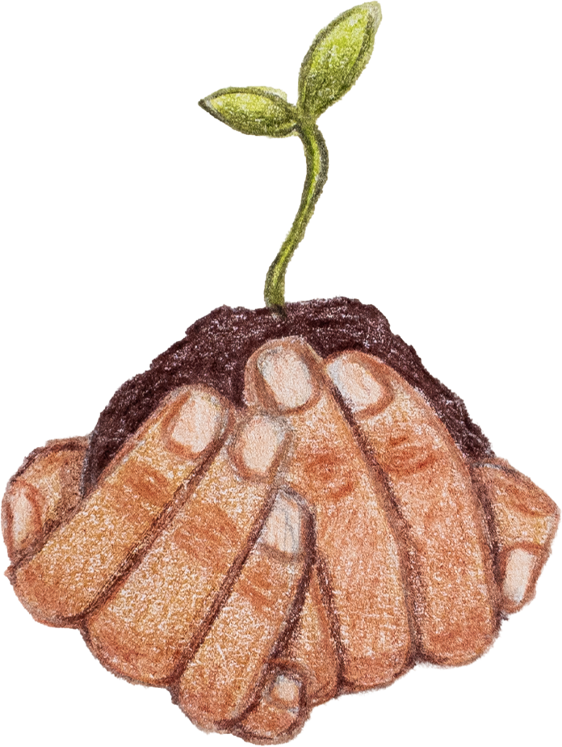
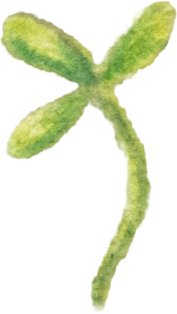
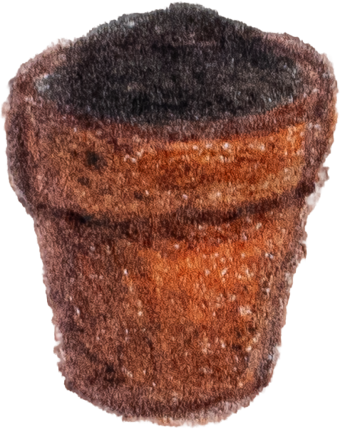
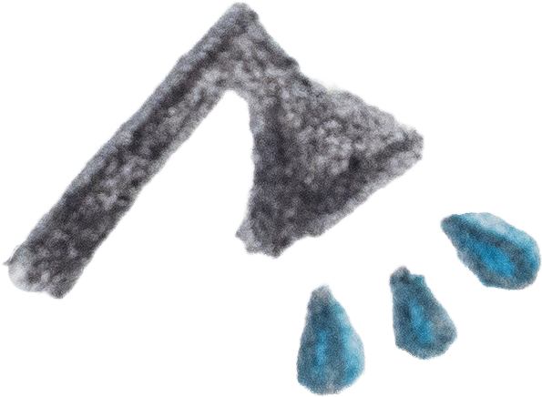

Manual de
plantio

Germinação
O que você vai precisar
- Pote plástico
- Algodão
- Filme plástico
Preparo
Coloque as sementes em um pote plástico, envolvidas no algodão úmido, cubra o pote com filme plástico mantendo ele lacrado, abrindo somente para molhar o algodão, cuidado para não encharcar.
-

O papel filme formará um tipo de estufa. Deixe em local meio à sombra, durante a germinação.
-

Molhe o algodão a cada 3 ou 4 dias, sempre direcionando em poucas quantidades de água, de preferência use um borrifador.
-

A iluminação solar deve ser indireta, nesta fase.
Depois de
germinadas
-
Espere a semente germinar.
Mantenha o algodão úmido, mas não encharcado, e observe até surgir uma raizinha.

-
Prepare um vaso com terra.
Escolha um vaso com furinhos embaixo para a água escoar. Use uma terra própria para plantio, de preferência leve e rica em matéria orgânica.

-
Faça um pequeno buraco na terra.
Não precisa ser muito fundo — em geral, cerca de 1 a 2 cm, dependendo do tamanho da semente.
-
Transfira a semente com cuidado.
Coloque a raiz voltada para baixo e cubra delicadamente com terra. Evite apertar demais.
-
Regue levemente.
A terra deve ficar úmida, mas não encharcada.

-
Deixe em um local iluminado.
Depois que a muda começar a crescer e aparecerem as primeiras folhinhas, ela pode receber mais luz gradualmente.